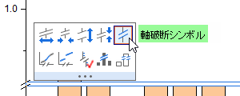

FAQ-118 グラフに2つの軸破断を追加するにはどうしたら良いでしょうか?
Add-2Breaks
最終更新日：2020/3/19
Originのグラフの場合、軸ダイアログの軸破断タブで複数の軸破断を追加することができます。
例えば、グラフに2つの軸破断を追加するには、
- グラフの軸上でダブルクリックして、軸ダイアログを開き、軸破断タブを開きます。
- 軸破断の数のドロップダウンリストから2 を選択します。その後、軸破断について設定が可能です。
- 軸破断の終了と開始のスケールなどの詳細編集は、詳細ボタンをクリックして開く、軸破断の詳細ダイアログを使用します。軸破断をクリックして開くミニツールバーボタンを使用して破断をカスタマイズすることもできます。
- 
Note: 一つの軸に対する軸破断の最大数は7です。
キーワード: 軸破断, 2つの軸破断, 複数破断, グラフ編集, 軸ダイアログ, 軸フォーマット
必要なOriginのバージョン: Origin 2015 SR0以降